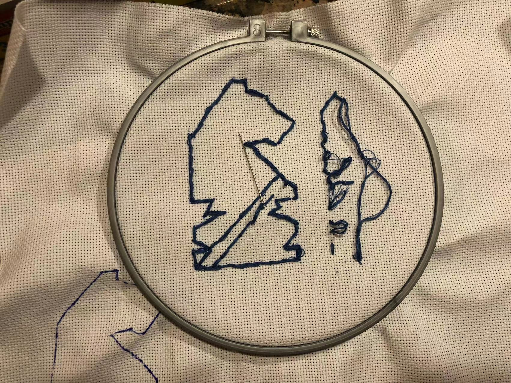

Exhibition of Wonder - Bag with Embroidery
Prototyping

To start my project, I decided to first try out individual stiches, only to find out that embroidery floss was too thick to go through a normal needle, therefore I went to the dollar store and bought a set of needles with an embroidery needle. I then started with a simple running stich and then with a running backstich, which I also used to try out curves on a much simpler knight I traced on the internet. Because originally I didn't have an embroidery hoop, I drew the knight at the corner, only to find out that I needed a hoop to keep the fabric taut, and that the design had to be closer to the centre so that the hoop would work.
[Back to Hub]
[Next Day]